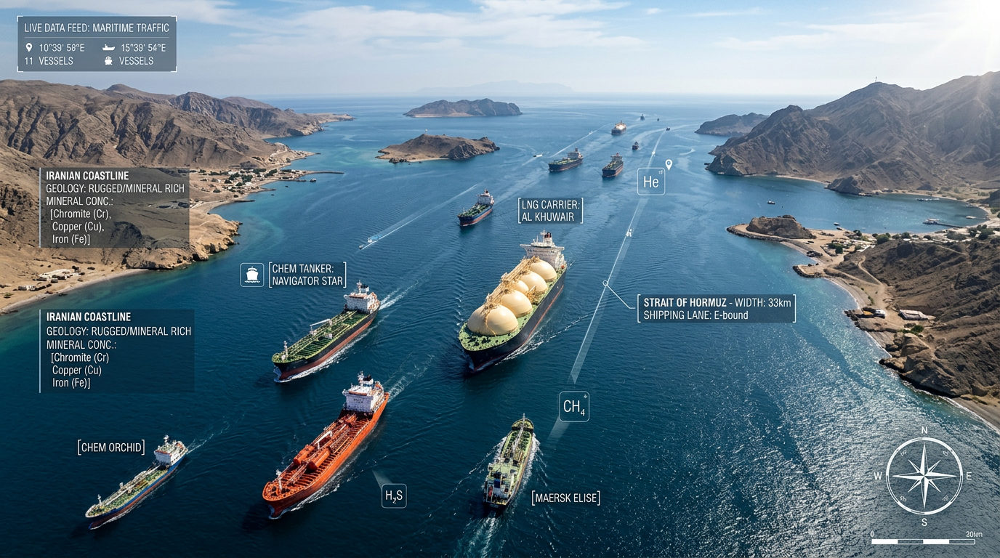
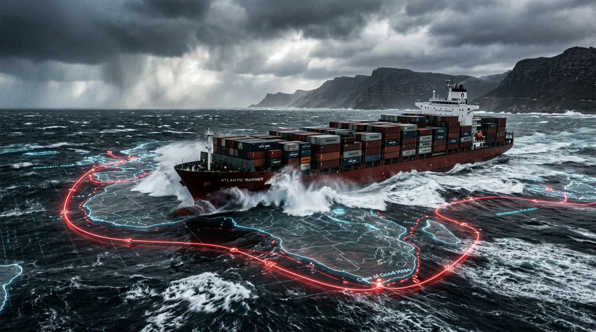
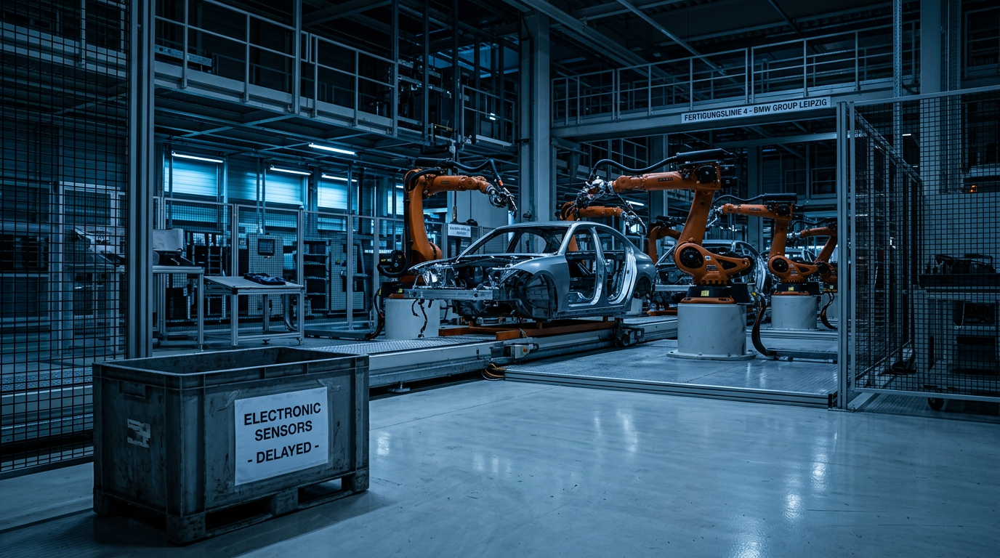

Vulnerability
Assessment
1. Executive Summary
The stability of the global high-technology sector is increasingly tied to the security of Middle Eastern maritime corridors. While energy is the most visible commodity, the region’s chokepoints—the Suez Canal/Red Sea and the Strait of Hormuz—are critical for the movement of finished electronics, manufacturing machinery, and rare chemical inputs necessary for semiconductor fabrication.
Key Maritime Chokepoints
2.1 Suez Canal & Bab el-Mandeb
Handles 12–15% of total global trade and ~30% of global containerized trade.
Approximately 31.9% of the cargo value transiting the canal consists of electrical and machinery products.
Rerouting via the Cape of Good Hope increases the voyage distance by ~4,000 miles, adding 10–14 days of delay.
Insurance premiums have surged (up to $2,400 per 40ft container in high-conflict periods), and freight rates on Asia–Europe lanes have seen 2x to 5x increases during crises.
2.2 Strait of Hormuz
11% of global seaborne trade by volume.
Beyond oil, it is a primary route for 20% of global LNG and critical industrial minerals/chemicals.
The strait is the jugular for helium exports (from Qatar), which is essential for semiconductor equipment cooling. It also facilitates the flow of sulfur, aluminum, and bromine used in etching and packaging.


Sector-Specific
Vulnerabilities
3.1 Semiconductors (Upstream)
Disruptions in the Strait of Hormuz threaten the supply of high-purity gases and chemicals. A 14-day delay in chemical delivery is catastrophic for 3nm-class fabrication which operates on strict just-in-time (JIT) cycles.
Fabs in Taiwan and South Korea rely on LNG from the Gulf. Taiwan’s LNG inventory is estimated at only 1.5 weeks, making the global chip supply chain highly sensitive to any blockade of Qatari or Emirati gas exports.
3.2 Consumer Electronics (Downstream)
Finished goods (smartphones, PCs, servers) are typically shipped in high volumes via container through the Suez Canal.
Most electronics retailers maintain low inventory levels. Disruption leads to immediate "dwell time" increases and potential stockouts in European and North American markets.
To bypass sea delays, companies often pivot to air freight, which is 5–10x more expensive and has significantly lower capacity, leading to squeezed margins and higher MSRPs for consumers.
Secondary Sectors
3.3 Automotive and Heavy Machinery
Modern vehicle manufacturing relies on "just-in-time" parts delivery. Rerouting around Africa delays critical components (e.g., wiring harnesses, specialized sensors) produced in East Asia and bound for European assembly plants.
Major European automakers (e.g., Tesla Berlin, Volvo Belgium) have previously announced production halts due to parts shortages caused by Red Sea transit delays.
Inventory tied up at sea for an additional 14 days increases working capital requirements and financing costs for manufacturers.
3.4 Pharmaceuticals and Medical Supplies
A subset of pharmaceutical precursors and low-value medical consumables (syringes, PPE) are shipped via container routes.
While high-value biologics typically travel by air, the increased cost and reduced capacity of air freight (due to the pivot from sea) indirectly raises the cost of medical supply chains.

Economic Impacts
J.P. Morgan estimates that prolonged Red Sea disruptions can add 0.7 percentage points to global core goods inflation.
The automotive and machinery sectors are particularly vulnerable to "missing component" syndromes, where the lack of a single chip or sensor delayed at sea halts entire assembly lines.
Mitigation & Routes
A middle-ground option taking 15–20 days (faster than sea, cheaper than air) but currently limited by total throughput capacity and geopolitical constraints in Eurasia.
Leading manufacturers (e.g., Samsung, TSMC) are increasing their "safety stock" of critical chemicals from 1 month to 3+ months.
Accelerated investment in fab capacity in the US (Arizona, Texas) and Europe (Germany) to reduce the geographic dependency on the "Hormuz–Suez" corridor.